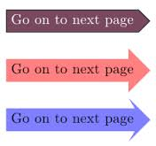

Teaching Point:
Today we will see how we can use Buttons and Broadcast to turn the page.
The Next Page
We will be using buttons to go from one page to another. We have used buttons before. We used them in our last project to control the game that we made. These buttons will work the same way. We will make a new sprite to be our next page button and we will put the WHEN SPRITE CLICKED code into it. After that the code should turn the page by telling the other sprites to make changes. This means:
- Changing the background if the sprite is in a new place.
- Changing the story text. This does not need a new sprite. You can just change costumes to new writing on the text you already have.
- Showing or Hiding different characters if they are coming or going in the story.
We can't make all of those Sprites do different things in the code for the NEXT PAGE Sprite. We will have to use Broadcast to have the NEXT PAGE Sprite tell the other Sprites what to do. There is a really good tutorial on Scratch about this we can look at.
Click here to see Changing Scenes TutorialToday's Assignment
Make a new Sprite that says NEXT PAGE. When it is clicked, it should change the scene to the next part of the story.
Back to School Portal